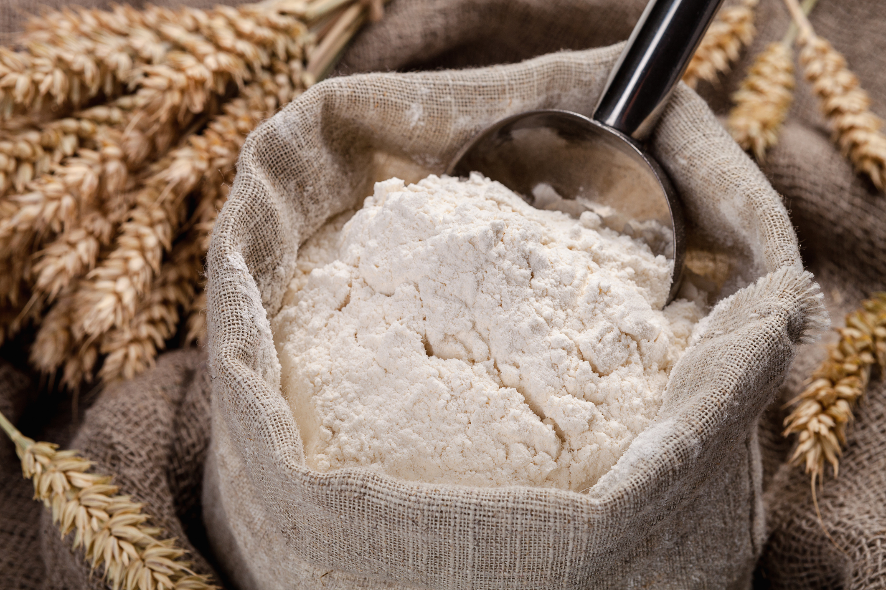

receta de cocaína (no me hago cargo)
Sea bienvenido a la guía completa de cómo hacer cocaína. Si lo hace bien, usted podra ser el rey del mundo, ya sea en su propio mundo o en el mundo real. [Por favor, lea la declaración al final de este texto.]
Sin mas que decir, ¡vamos a llegar a la acción!
La fórmula básica de cocaína se inicia mediante la compra o hacer tropinine, la conversión de la tropinona en 2-carbomethoxytropinone (también conocido como metil-tropan-3-ona-2-carboxilato), reduciendo esto a ecgonina, y cambiante que a la cocaína. Succınico. Esto se puede comprar, también. 23,2 g de succinaldoxime en polvo en 410 ml de ácido sulfúrico 1 N y añadir gota a gota con agitación a 0 * una solución de 27,6 g de nitrito de sodio en 250 ml de agua más 3 horas. Después de la adición, agitar y dejar que el aumento mezcla a temperatura ambiente durante unas 2 horas, teniendo cuidado de no dejar que entre aire del exterior en la reacción. Revuelva en 5 g de carbonato de Ba y el filtro. Extraer el filtrado con éter y seca, se evapora a vacío para obtener el succınico. Este fue t Aken de JOC, 22, 1390 (1957). Para hacer succinaldoxime, ver JOC, 21, 644 (1956).
Síntesis completa de succınico. JACS, 68, 1608 (1946). En un 2 litros 3 matraz de bocas, equipado con un agitador, condensador de reflujo, y una adición embudo, se mezcla 1 litro de etanol, 67 g de pirrol recién destilado, y 141 g de clorhidrato de hidroxilamina. Se calienta a reflujo hasta que se disuelva, añadir 106 g de carbonato de sodio anhidro en pequeñas porciones tan rápido como reacción permitirá. Reflujo durante 24 horas y filtrar la mezcla. evaporar el filtrado a sequedad a vacío. El residuo se recoge en la cantidad mínima de agua hirviendo, decolorar con carbón, el filtro y permitir a recristalizar en el refrigerador. Se filtra para obtener el producto y se concentran para obtener adicional de los cultivos. Rendimiento de polvo succinaldoxime es un poco más de 40 g, punto de fusión es 171-172 *. 5,8 g del polvo anterior se coloca en un vaso de precipitados de 250 ml de capacidad y se añaden 54 ml de ácido sulfúrico al 10%. Se enfría a 0 * y añadir en pequeñas porciones de 7 g de nitrito de sodio (si agrega el nitrito demasiado rápido, el dióxido de nitrógeno humos evolucionarán. Después de la dioxima se haya disuelto completamente, permitir que el solución se caliente a 20 * y la efervescencia para ir hasta su finalización. neutralizar lq solución amarilla al papel de tornasol mediante la adición de pequeñas porciones de carbonato de bario. Se filtra el sulfato de bario que precipita. El filtrado es 90% puro succınico y no se purificó adicionalmente para la reacción para crear tropinona. Realice este procedimiento 3 veces más para obtener la cantidad adecuada para el siguiente paso, o multiplicar las cantidades dadas por cuatro y proceda como se describe anteriormente. Tome la cantidad total de succinaldehído (obtenido a partir de 4 de los anteriores síntesis combinados y sin más tratamiento o purificación esto tenía mejor que sea 15,5 g de succınico poner en un matraz Erlenmeyer de 4.5 litros de capacidad. Añadir 21,6 g de clorhidrato de metilamina, 46,7 g de ácido acetonadicarboxílico, y suficiente agua para hacer un volumen total de 2 litros. Ajustar el pH a 8-10 por adición lenta de una solución saturada de fosfato disódico. El condensado de esta reacción (permita establecer para alrededor de 6 días) se extrae con éter, se seca la solución etérea sobre sulfato de sodio y se destiló, el producto venir a 113 * en 25 mm de presión se recoge. Tras el enfriamiento, 14 g de tropinona cristaliza en estado puro.
[2]-Carbomethoxytropinone. Una mezcla de 1,35 g de metóxido de sodio (este es el sodio en una cantidad mínima de metanol), 3,5 g de tropinona, 4 ml de carbonato de dimetilo y 10 ml de tolueno se calentó a reflujo durante 30 min. Se enfría a 0 * y añadir 15 ml de agua que contiene 2,5 g de cloruro de amonio. Extraer la solución después de agitar con con cuatro porciones de 50 ml cloroformo, seca, se evapora el cloroformo al vacío. Se disuelve el aceite residuo en 100 ml de éter, se lava dos veces con una mezcla de 6 ml de saturada de carbonato potásico y tres ml de 3 N de KOH. Seco y se evaporan al vacío para recuperar el tropinona sin reaccionar. Se recoge el aceite en una solución de cloruro de amonio acuoso y se extrae con cloroformo, seca, y se evapora al vacío para obtener un aceite. El aceite se disolvió en acetona caliente, fresco, y rayar interior del matraz con varilla de vidrio para precipitar 2-carbomethoxytropinone. Recristalizar 16 g de este producto en 30 ml de caliente acetato de metilo y añadir 4 ml de agua fría y 4 ml de acetona. Ponga en congelador durante 2 1/2 a 3 horas. Filtrar y lavar el precipitado con frío acetato de metilo para obtener el producto puro. Methylecgonine. 0,4 mol de tropinona se suspende en 80 ml de etanol en un matraz de hidrogenación Parr (o algo que puede tomar 100 psi y no reaccionar con la reacción, como el acero inoxidable o vidrio). 10 g de Raney Nickle se añade con buena agitación (agitación o agitación) seguido de 2-3 ml de solución de NaOH al 20%. Buque Seal, introducir 50 psi de hidrógeno ambiente (después de vaciar vaso con hidrógeno) y calentar a 40-50 *. Después de no más absorción de hidrógeno (indicador de presión se mantendrá estable después de cayendo a su nivel más bajo) descargar la presión y filtrado del níquel fuera, enjuagar la botella con cloroformo y utilizar este enjuague para enjuagar el níquel mientras que todavía en el papel de filtro. Aproveche al básico filtrado con KOH después enfriamiento a 10 *. Se extrae con cloroformo seco, y se evapora el cloroformo al vacío para obtener un aceite. Mezclar el aceite más cualquier precipitado con un igual volumen de éter seco y se filtro. Añadir éter más seco para el filtrado hasta hay más precipitado, filtrar y añadir al resto de la precipetate.
Se recristaliza en isopropanol para obtener methylecgonine puro. Prueba para la actividad.
Si activa, vaya hasta el paso de la cocaína. Si no está activo, haga lo siguiente; Se agita con carbón activado durante 30 minutos, se filtra, se evapora en vacío, disolver el líquido marrón en metanol, y neutralizar con 10% de ácido HCl en éter seco. Se evapora el éter hasta que las dos capas desaparecen, y permita que se reposar durante 2 horas a 0 * para precipitar el producto del título. Hay muchos maneras de reducir de 2 a carbomethoxytropinone methylecgonine. Elegí para diseñar una reducción Raney níquel porque es barato y no como sospechoso como LAH y es mucho más fácil que las amalgamas de zinc o de sodio.
Cocaína. 4,15 g de methylecgonine y 5,7 g de anhídrido benzoico en 150 ml de benceno seco se sometió a reflujo suavemente durante 4 horas de tomar precauciones contra H20 (el 2 debe estar en un nivel inferior) en el (tubo de secado) de aire. Enfriar en un baño de hielo, se acidifica cuidadosamente con ácido clorhídrico, seca, y se evapora en un vacío para obtener un aceite rojo que se trata con una pequeña porción de isopropanol para precipitar la cocaína.
Como puede ver, esta es una tarea titánica. Las hojas de coca dan ecgonina, que como se puede ver, es sólo un salto de distancia de la cocaína. Si usted puede conseguir egconine, luego se disuelven 8 g de medio en 100 ml de etanol y pasar (burbuja) HC1 seco gas a través de esta solución durante 30 min. Dejar enfriar a temperatura ambiente y dejar reposar durante otros 1 1/2 horas. Reflujo suavemente durante 30 min y se evapora a vacío. Basifica el aceite residuo con NaOH y se filtra para obtener 8,4 g de methylecgonine, que se convierte a la cocaína como en el paso por encima de la cocaína.
A continuación se da un método algo más fácil de producir tropinona por el métodos generales de Willstátter, que fue clave en la primera sintética producción de cocaína y varios otros alcaloides. Después de revisar esta método, me pareció que era más sencillo que los anteriores en muchos aspectos.
Tropinona. 10 g de diacetato de pyrrolidinediethyl se calientan con 10 g de cimeno y 2 g de polvo de sodio, teniendo lugar la reacción a aproximadamente 160 *. Durante la reacción (que es completa en aproximadamente 10 min), la temperatura no debe exceder de 172 *. El producto de reacción resultante en disolvió en agua, luego saturada con carbonato de potasio, y el aceite, que separa, se hierve con ácido sulfúrico diluido. Se filtra 2,9 g de formas y picrato tropinona. Aquí hay dos fórmulas más elaboradas por Willstátter que producen tropinona desde tropine. Tome nota de las diferencias de rendimiento.
Tropinona. A una solución de 25 g de tropina, disuelto en 10 veces su peso de 20% de ácido sulfúrico se añaden 25 g de una solución al 4% de potassiumpermanganate en 2 o 3 porciones g más de 45 min, manteniendo la temperatura a 10-12 *. El adición de permanganato causará calor (mantener la temperatura de 10 a 12 *) y la precipitación de dióxido de manganeso. La mezcla de reacción se completa en 1 hora. Se añade un gran exceso de NaOH y la reacción se separa por destilación de vapor hasta que se haya recogido 1 litro de destilado. El tropinona es aislado como el compuesto dibenzal mezclando el destilado con 40 g de benzaldehído en 500 cc de alcohol y 40 de 10% de solución de hidróxido de sodio. Deje reposar varios días para obtener dibenzaltropinone como agujas amarillas.
Rendimiento: 15,5 g, 28%. Se recristaliza en etanol para purificar.
Tropinona. Una solución de 12 g de ácido crómico en la misma cantidad de se añade agua (12 g) y 60 g de ácido acético glacial gota a gota con agitación durante un período de 4 horas a una solución de 25 g de tropina en 500 cc de ácido acético glacial que ha sido calentado a 60-70 * y se mantiene a esta temperatura durante la adición. Se calienta la mezcla durante un breve periodo de tiempo en un baño de vapor hasta que todo el ácido crómico ha desaparecido, se enfría y fuertemente alcalino con NaOH. Extraer con seis porciones de 500 cc de éter y se evapora el éter al vacío para obtener un aceite que cristaliza fácilmente. Se purifica por convering a la picrato o fraccionadamente destilar, recogiendo la fracción en 224-225 * en 714 mm vacío.
Los tropinones se pueden utilizar en la fórmula anterior (o en una fórmula que se han encontrado en otros lugares) para ser convertidos a la cocaína. Recuerde recristalizar el 2-carbomethoxytropinone antes de convertirse al methylecgonine.